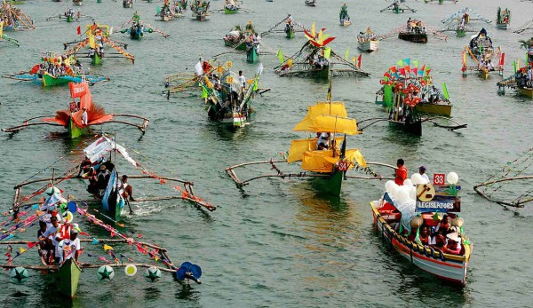
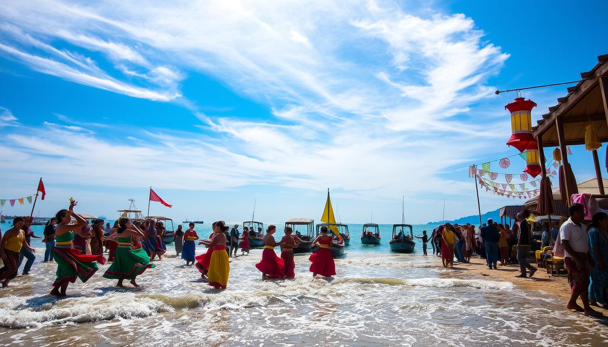
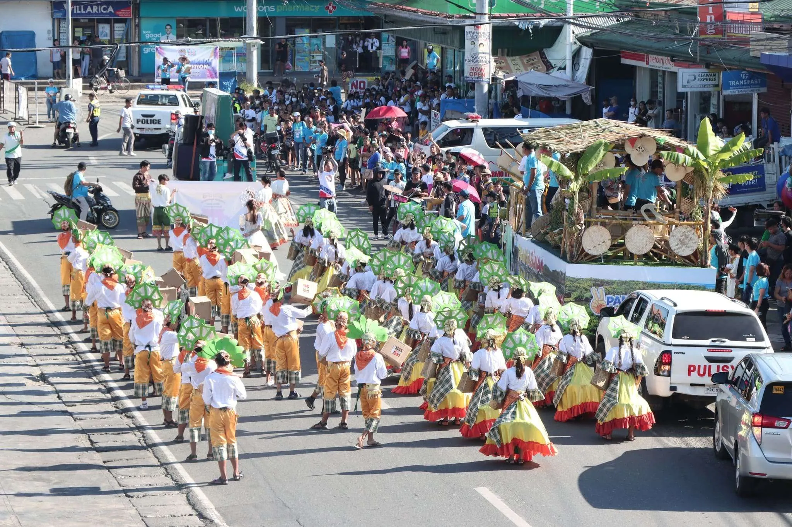
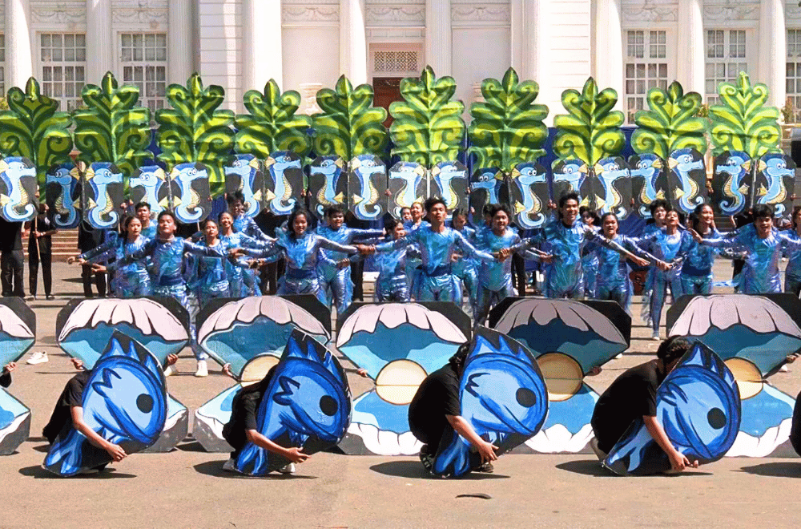

Pista’y Dayat, or the “Festival of the Sea,” is an annual thanksgiving celebration held in Lingayen and other coastal towns of Pangasinan. It expresses gratitude for the province’s rich marine resources and honors the livelihoods sustained by the sea. The festival has evolved into the “mother of all festivals in Pangasinan,” attracting locals and tourists every April and May.
Fun Facts
- Includes beach activities and cultural shows.
- Features beauty pageants and seaside events.
- Celebrated every May.
Historical Background

The festival began in the 1960s in the fishing communities of Lingayen and Alaminos. “Pista’y Dayat,” in Pangasinan language, literally means “Feast of the Sea.” It originated as a thanksgiving rite among fisherfolk offering prayers for a bountiful catch. Over time, it became a provincewide cultural event showcasing Pangasinan’s unity and prosperity.
Major Events and Attractions

Key attractions include the Banca Parada (fluvial parade) featuring decorated boats, Limgas na Pangasinan pageant, PanagARTe La art exhibits, and trade and tourism expos. The festival also features concerts, local film festivals such as PangaSINE, and sports competitions like the Tigasin Triathlon. Traditional games, sand sculpting, and cultural shows celebrate local artistry and environmental awareness.
Cultural and Environmental Significance

Pista’y Dayat not only promotes Pangasinan’s cultural identity but also reinforces environmental stewardship. Activities such as beach clean-ups and eco-themed contests remind participants of the importance of preserving marine and coastal ecosystems—the province’s economic lifeline.
Contemporary Celebration

Today, Pista’y Dayat blends faith, art, and tourism, drawing thousands to Lingayen’s shoreline each year. Under the leadership of provincial officials, recent editions have expanded to include creative industries, sustainable tourism, and youth participation, ensuring that the celebration remains both festive and purposeful.
Fishermen once offered a symbolic thanksgiving to the sea during the festival, honoring it as the provider of livelihood and life for coastal families.